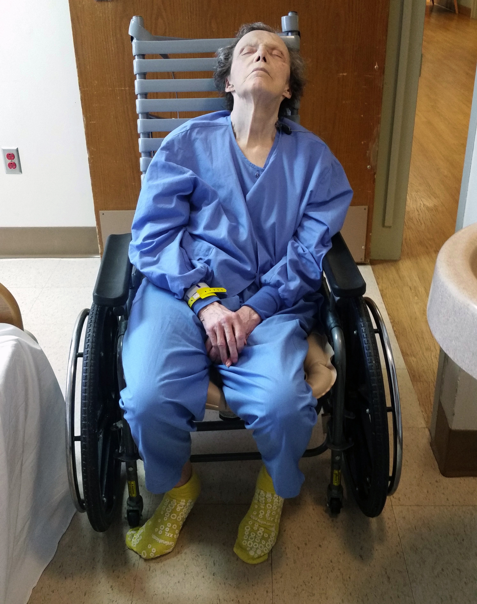

<%= t.renderMarkdown(archieml.text2.section1) %>
GRAPHIC:STATEMENTS OF DEFICIENCIES IN WASHINGTON
<%= t.renderMarkdown(archieml.text2.section2) %>


“That seems like a big, big red flag.” - Jim Vollendroff, former director of King County Behavioral Health and Recovery Division
<%= t.renderMarkdown(archieml.text2.section3) %>
INSET: STATEMENT FROM URADNIK
(Douglas Buell / The Arlington Times)
<%= t.renderMarkdown(archieml.text2.section4) %>
GRAPHIC: BUBBLE CHART
<%= t.renderMarkdown(archieml.text2.section5) %>
“Our role in this structure is to really work with the facility to help them be successful in doing their job better.” - Nate Weed, director of the state Department of Health’s Office of Community Health Systems
<%= t.renderMarkdown(archieml.text2.section6) %>
CHART: U.S. MAP
<%= t.renderMarkdown(archieml.text2.section7) %>
<%= t.renderMarkdown(archieml.text2.section8) %>
Eric Descalso holds his daughter Danielle in a family photo. (Courtesy of Descalso family)
<%= t.renderMarkdown(archieml.text2.section9) %>
Cascade Behavioral Health Hospital in Tukwila was known as Riverton Hospital until it was sold to Acadia Healthcare in 2013. It offers treatment for psychiatric and addiction disorders. (Erika Schultz / The Seattle Times)
<%= t.renderMarkdown(archieml.text2.section10) %>
<%= t.renderMarkdown(archieml.text2.section11) %>
<%= t.include("_prerollVideo.html", { file: "codi_titlecard.mp4", id: "6068745312001", runtime: "3:22" }) %>
xxxxxxx (Erika Schultz, Gabriel Campanario & Lauren Frohne / The Seattle Times)
<%= t.renderMarkdown(archieml.text2.section12) %>
Danielle Descalso and her dad, Eric Descalso, "were best friends," says her mother, Codi Branson. (Courtesy of Descalso family)
<%= t.renderMarkdown(archieml.text2.section13) %>
<%= t.renderMarkdown(archieml.text2.section14) %>
<%= t.renderMarkdown(archieml.text2.section15) %>
<%= t.renderMarkdown(archieml.text2.section16) %>
<%= t.renderMarkdown(archieml.text2.section17) %>
<%= t.renderMarkdown(archieml.text2.section18) %>
Jim Howell, 66, fell into depression after a shoulder injury. For days, he talked about his hopelessness, and took his own life about two weeks after arriving at Cascade Behavior Hospital. (Courtesy of Bonnie Jaeger)
<%= t.renderMarkdown(archieml.text2.section19) %>
You can support watchdog journalism
Make a tax-deductible donation to The Seattle Times Investigative Journalism Fund, and subscribe to The Seattle Times.
<%= t.renderMarkdown(archieml.text2.section20) %>

Carolyn Tomich, 76, was photographed at Cascade Behavioral Hospital the day she fell and broke her hip in June 2017. The fracture contributed to her death a few weeks later. (Courtesy of Tracee Tomich)
<%= t.renderMarkdown(archieml.text2.section21) %>

Jim Mason, 92, died after a fall at Cascade Behavior Hospital that caused a hemorrhage and "blunt force injuries to the head" in May 2018. (Courtesy of Tim Johnson)
<%= t.renderMarkdown(archieml.text2.section21) %>
<%= t.include("partials/_dontMiss.html") %>
- Reporter: Daniel Gilbert
- Project editor: Ray Rivera
- Photographer: Erika Schultz
- Photo editor: Fred Nelson
- Video editor: Lauren Frohne
- Developer and graphic artist: Emily M. Eng
- Illustrator: Gabriel Campanario
- Engagement: Taylor Blatchford
- Project coordinator: Laura Gordon
CREDITS
You can support watchdog journalism
Make a tax-deductible donation to The Seattle Times Investigative Journalism Fund, and subscribe to The Seattle Times.